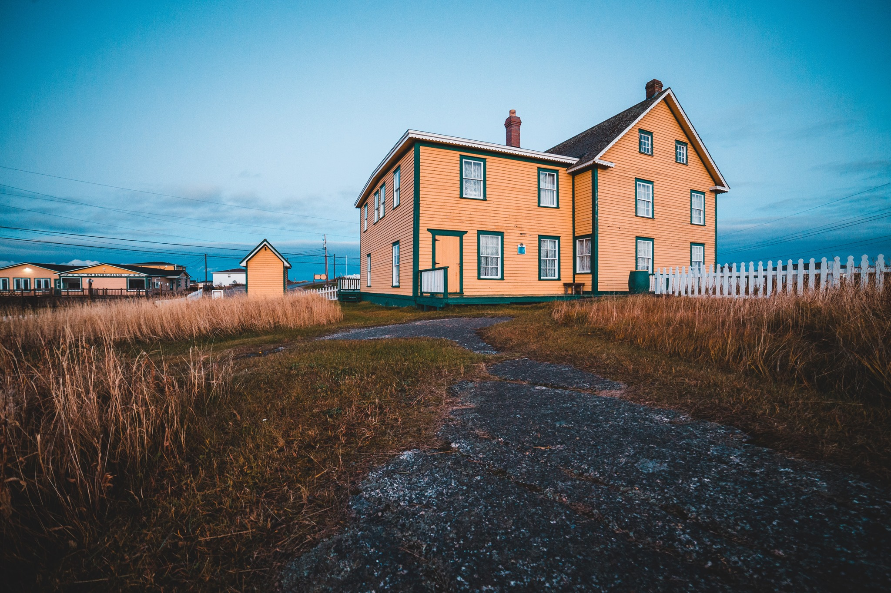

🏠De ce ai prefera să renunți la apartament și să te muți la casă?
👉(Deși e mai scump.)
Există câteva motive întemeiate pentru care ai putea alege o casă în loc de apartament:
📌Casa are curte.
În contextul pandemiei, apartamentele au devenit niște cutii în care am stat închiși luni de zile, poate chiar un an, fără să ieșim. Nu prea am avut de ales cu noile restricții, iar de aici s-a declanșat o dorință (fondată) de a cumpăra o casă.
📌Loc de parcare asigurat.
Marea problemă în orașele mari, precum e Clujul, sunt locurile de parcare. La casă însă, ai cel puțin un loc de parcare asigurat.
📌Casa e mai spațioasă decat un apartament.
În general, spațiul contează când locuiești într-un apartament, iar de aici vine și dorința de “larg” pe care o avem cu toții în această perioadă.
📌Natura.
Fie că vrei sau nu, nu te poți muta la casă nouă în mijlocul Clujului sau al Bucureștiului pentru că acolo deja se află clădiri vechi.
Așa că, ești nevoit sa te duci înspre cartierele de case ale orașelor sau înspre periferie. Asta nu e neapărat un lucru negativ, pentru că aici ești mai aproape de natură și probabil nu vei avea atâția vecini în jurul tău, ca la bloc.
Din experiența pe care am avut-o în ultimul an, cererile pentru case mi-au înroșit linia telefonului și majoritatea acestor clienți au avut ca surse de finanțare fonduri proprii.
“Spre exemplu, în București, cererea de case s-a dublat în Trimestrul 1, 2021 față de Trimestrul 1 2020, în Cluj-Napoca cu 88%, iar în Brașov cu 40% - orașele menționate fiind și cele mai dinamice pe toate segmentele pieței imobiliare.
Cei mai mulți români (72%) au avut ca surse de finanțare fonduri proprii în T1 2021, iar 96% dintre proprietățile tranzacționate de către agenții Re/Max România s-au vândut la prețul de listare.
Totodată, comparativ cu aceeași perioadă a anului precedent, a crescut cu 78% și interesul din partea cumpărătorilor, numărul mediu de oferte de achiziție înregistrate de o proprietate în exclusivitate fiind de nouă cumpărători/ proprietate.”
Răzvan Cuc, președintele RE/MAX Romania, pentru Profit.ro. Acestea sunt datele oficiale după primul Trimestru din 2021.
